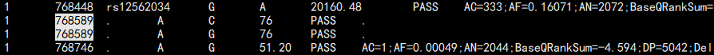

vcf/vcf.gz/bcf处理工具之vt（类vcftool）：
vt is a variant tool set that discovers short variants from Next Generation Sequencing data.
1）软件安装
本地地址：/mnt/X500/farmers/luozw/bin/anaconda/envs/bioinfoLzw/bin/vt
2）命令详解：
4 General Features and notes
4.1 Common options
4.2 Uncompressed BCF streams
4.3 Filters 突变过滤，区间+表达式。和bcftools 功能差不多。
4.4 Alternate headers
4.5 General cases of Ploidy and Alleles
4.6 BCF Compression Levels vs Compression Time
5 VCF Manipulation
5.1 View
5.2 Index
5.3 Sorting
5.4 Normalization 突变标准化
5.5 Decompose biallelic block substitutions 拆分DELINS为多个突变
5.6 Decompose 拆分一行多条突变
5.7 Drop duplicate variants 去重复
5.8 Paste
5.9 Concatenate 同bcftools cat
5.10 Remove info tags 去除INFO列，某一tag 的信息
5.11 Filter
5.12 Filter overlap
5.13 Validate
5.14 info2tab Extract INFO fields to a tab delimited file
vt info2tab in.bcf -u PASS -t EX_RL,FZ_RL,MDUST,LOBSTR,VNTRSEEK,RMSK,EX_REPEAT_TRACT
6 VCF Inspection and Evaluation
6.1 Peek Summarizes the variants in a VCF file
6.2 Partition Partition variants from two data sets.
6.3 Multi Partition
6.4 Annotate Regions Annotates regions in a VCF file. The BED file should be bgzipped and indexed with tabix.
6.5 Annotate Variants Annotates variants in a VCF file.仅支持特定数据库的注释。
6.6 Compute Features
6.7 Estimate
6.8 Profile Mendelian Errors
6.9 Profile SNPs
6.10 Profile Indels
6.11 Profile VNTRs
6.12 Profile NA12878
7 Variant Calling
7.1 Discover
7.2 Merge candidate variants
7.3 Remove overlap
7.4 Annotate Indels
7.5 Construct Probes
7.6 Genotype
Common options
-i multiple intervals in <seq>:<start>-<end> format delimited by commas.
-I multiple intervals in <seq>:<start>-<end> format listed in a text file line by line.
-o defines the out file which and has the STDOUT set as the default.
vt recognizes the appropriate output by file extension.
<name>.vcf - uncompressed VCF
<name>.vcf.gz - compressed VCF
<name>.bcf - BCF
You may modify the STDOUT to output the binary version of the format. Uncompressed
VCF and BCF streams are indicated by - and + respectively.
-f filter expression
-s sequential region selection as opposed to random access of regions specified by the i option.
3）示例：
3.1）vt decompose （vcf 同位点多突变拆分工具）
示例： vt decompose 1000G_phase1.snps.indel.b37.vcf -s -o 1000G_phase1.snps.indel.b37.vcf_hand.vcf
存在问题1：只能拆分，不能左对齐 （1 874449 . TC CC 1268.29 PASS AC=1;AC_AFR=0）
解决问题：可以拆分多突变频率信息
1 13404 . G A,T 136.58 VQSRTrancheSNP99.60to99.80 AC=2,1
1 13404 . G A 136.58 VQSRTrancheSNP99.60to99.80 AC=2;
1 13404 . G T 136.58 VQSRTrancheSNP99.60to99.80 AC=1;
注意：用 gatk LeftAlignAndTrimVariants -split-multi-allelics 拆出来的位点没有info 信息，只有变异，所以一定要先要用vt拆分变异，再处理。

3.2）Annotate Variants（仅可以注释下面资源包中的信息）
Annotates variants in a VCF file. The GENCODE annotation file should be bgzipped and indexed with tabix. This is available in the vt resource bundle. 示例：vt annotate_variants mills.vcf -r hs37d5.fa -g gencode.v19.annotation.gtf.gz
3.3）Filters
This allows you to extract biallelic indels that are passed on chromosome 20.
vt view vt.bcf -f "N_ALLELE==2&&VTYPE==INDEL&&PASS" -i 20
Other examples of filters：
#all variants with a SNP in them
VTYPE&SNP
#Simple insertions of length 1
VTYPE==INDEL&&DLEN==1
#Indels of length 1
VTYPE==INDEL&&LEN==1
INFO fields || INFO.<tag>
A/C SNPs : REF=='A' && ALT=='C'
AC type of STRs : REF=~'^.(AC)+$' || ALT=~'^.(AC)+$'
Passed biallelic SNPs only : PASS&&VTYPE==SNP&&N_ALLELE==2
Passed Common biallelic SNPs only : PASS&&VTYPE==SNP&&N_ALLELE==2&&INFO.AF>0.005
Passed Common biallelic SNPs or rare indels : (PASS&&VTYPE==SNP&&N_ALLELE==2&&INFO.AF>0.005)||(VTYPE&INDEL&&INFO.AF<=0.005)
Passed Common biallelic SNPs or rare indels : ((PASS&&VTYPE==SNP&&N_ALLELE==2&&INFO.AF>0.005)||(VTYPE&INDEL&&INFO.AF<=0.005))&&QUAL>100
with quality greater than 100
Failed rare variants : ~PASS&&(INFO.AC/INFO.AN<0.005)